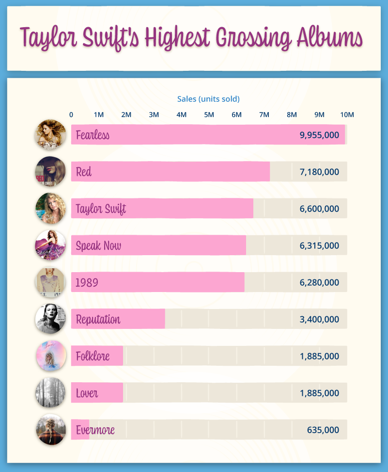

Example Analysis
This analysis is aimed at discovering how the popularity of Taylor Swift’s music on Spotify changed over time, across albums, or in relation to audio features such as danceability, energy, and valence. The data analysis is intended for Taylor Swift’s fans.
Background Context
To provide additional insight into Taylor Swift’s commercial performance, the following chart summarizes the highest total album sales across her discography:

Source: ChartMasters / RIAA Sales Database
The dataset used in this analysis comes from Kaggle. It was published in the notebook “Taylor Swift Spotify Dataset” by Jarred Priestter. Source link: https://www.kaggle.com/code/jarredpriestter/taylor-swift-spotify-notebook
| Variable | Description | Type | Example |
|---|---|---|---|
| track_name | Name of the song | Character | “Love Story” |
| album_name | Name of the album | Character | “Fearless” |
| release_date | Date the song was released | Date | “2008-11-11” |
| popularity | Spotify popularity score (0–100) | Numeric | 78 |
| danceability | Measure of how suitable a track is for dancing (0–1) | Numeric | 0.65 |
| energy | Energy intensity (0–1) | Numeric | 0.72 |
| valence | Positivity or emotional brightness (0–1) | Numeric | 0.41 |
| acousticness | Degree of acoustic sound (0–1) | Numeric | 0.12 |
This analysis explores how the popularity of Taylor Swift’s music on Spotify changes over time. I examine differences across albums and investigate whether audio features (e.g., danceability, energy, valence) are related to how well songs are received. 🎧✨
My results show that Taylor’s overall album popularity has increased throughout her career. Albums such as 1989, Folklore, Evermore, and Midnights show particularly high popularity scores. This trend suggests ongoing evolution in musical style, storytelling, and cultural influence. 💗
🎧 Fun Fact:
Spotify’s popularity score reflects recent listening activity, not just total streams.
So a song gains popularity if it is being listened to now, not only historically.
In summary, this analysis shows a clear upward trend in Taylor Swift’s album-level popularity on Spotify over time. Earlier albums generally have lower popularity scores, while her more recent releases display significantly higher engagement among listeners. The relationships between audio features and popularity suggest that changes in energy, valence, and acousticness may play a role in shaping audience response. These patterns highlight Taylor’s ability to continually adapt her sound and storytelling to resonate with listeners. Overall, the findings illustrate both artistic evolution and shifting listener preferences across different eras of her music. ✨🎤
| Function | Package | Purpose |
|---|---|---|
select() |
dplyr | Selects the variables used in the analysis |
mutate() |
dplyr | Creates or transforms variables (e.g., release_year) |
year() |
lubridate | Extracts the year from the release date |
drop_na() |
tidyr | Removes rows with missing values |
group_by() |
dplyr | Groups data by album and year |
summarize() |
dplyr | Computes average values for selected audio features |
arrange() |
dplyr | Sorts results (e.g., by release year) |
pivot_longer() |
tidyr | Reshapes data for faceting or additional visualizations |
ggplot() |
ggplot2 | Initializes a plot object |
geom_line() |
ggplot2 | Plots lines showing trend over time |
geom_point() |
ggplot2 | Adds points to highlight individual album averages |
geom_col() |
ggplot2 | Creates bar plots for comparing album averages |
geom_smooth() |
ggplot2 | Adds trend lines (optional smoothing) |
facet_wrap() |
ggplot2 | Creates separate panels for visual comparison |
labs() |
ggplot2 | Adds titles, axis labels, and captions |
theme_minimal() |
ggplot2 | Applies a minimal theme to reduce visual clutter |
theme_classic() |
ggplot2 | Removes grid lines and applies a clean axis layout |
Results
taylor <- read.csv(“C:/Users/EXILEHAA/my-site/data/taylor_swift_spotify.csv”) library(dplyr) library(tidyr) library(lubridate)
# ggsave(“01_album_popularity_over_time.png”, p1, width = 9, height = 5, dpi$ > album_summary <- taylor %>% + select(name, album, release_date, popularity, danceability, energy, valenc$ + mutate(release_year = year(as.Date(release_date))) %>% + drop_na(popularity) %>% + group_by(album, release_year) %>% + summarize( + avg_popularity = mean(popularity, na.rm = TRUE), + avg_danceability = mean(danceability, na.rm = TRUE), + avg_energy = mean(energy, na.rm = TRUE), + avg_valence = mean(valence, na.rm = TRUE), + avg_acousticness = mean(acousticness, na.rm = TRUE), + .groups = “drop” + ) %>% + arrange(release_year) > head(album_summary)
A tibble: 6 × 7
album release_year avg_popularity avg_danceability avg_energy avg_valence
p1 <- ggplot(album_summary, aes(x = release_year, y = avg_popularity)) + + geom_line() + + geom_point(size = 2) + + geom_text_repel(aes(label = release_year), size = 4, nudge_y = 1) + + labs( + title = “Trends in Average Album Popularity Over Time”, + x = “Year”, + y = “Average Popularity (0–100)” + ) + + theme_classic() 
p2 <- album_summary %>% + group_by(album) %>% + summarize(avg_popularity = mean(avg_popularity, na.rm = TRUE), .groups = “$ + ggplot(aes(x = reorder(album, avg_popularity), y = avg_popularity)) + + geom_col(fill =”#4A90E2”) +
+ coord_flip() +
+ labs( + title = “Average Album Popularity Comparison”, + x = “Album”, + y = “Average Popularity (0–100)” + ) + + theme_classic()

p3 <- ggplot(album_summary_long, aes(x = value, y = avg_popularity)) + + geom_point(alpha = 0.6) + + geom_smooth(method = “lm”, se = TRUE, linewidth = 0.8, color = “black”) + + facet_wrap(~ feature, scales = “free_x”) + + labs( + title = “Relationships Between Audio Features and Album Popularity”, + x = “Feature Value”, + y = “Average Popularity (0–100)” + ) + + theme_classic() +
+ theme( + strip.background = element_blank(),
+ strip.text = element_text(face = “bold”)

The dataset used in this analysis comes from Kaggle (Priester 2023). Audio feature descriptions are based on Spotify Web API documentation (Team 2023). ## References